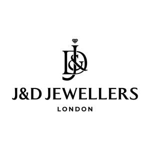

Trade Mark Journal No.2025/041 10 October 2025
UK00004270092 26 September 2025 (14,35)

- Class 14
- Jewellery; Necklaces [jewellery]; Brooches [jewellery]; Jewellery brooches; Jewellery, including imitation jewellery and plastic jewellery; Pendants [jewellery]; Bracelets [jewellery]; Brooches [jewellery, jewelry (Am.)]; Ornaments [jewellery]; Amulets being jewellery; Amulets [jewellery]; Pearls [jewellery]; Trinkets [jewellery]; Necklaces [jewellery, jewelry (Am.)]; Jewelry; Fashion jewellery; Gold jewellery; Lockets [jewellery]; Jade [jewellery]; Brooches [jewelry]; Jewelry brooches; Brooches being jewelry; Clasps for jewellery; Charms [jewellery]; Charms for jewellery; Jewellery charms; Enamelled jewellery; Pearls [jewellery, jewelry (Am.)]; Ornaments [jewellery, jewelry (Am.)]; Items of jewellery; Jewellery items; Costume jewellery; Decorative brooches [jewellery]; Rings being jewellery; Rings [jewellery]; Trinkets [jewellery, jewelry (Am.)]; Amulets [jewellery, jewelry (Am.)]; Bracelets [jewellery, jewelry (Am.)]; Pewter jewellery; Jewellery stones; Cloisonné jewellery [jewelry (Am.)]; Wristlets [jewellery]; Cloisonné jewellery; Cloisonne jewellery; Charms [jewellery, jewelry (Am.)]; Lockets [jewellery, jewelry (Am.)]; Chains [jewellery, jewelry (Am.)]; Jewellery products; Rings [jewellery, jewelry (Am.)]; Ivory [jewellery, jewelry (Am.)]; Shoe jewellery; Precious jewellery; Crucifixes as jewellery; Necklaces [jewelry]; Agate as jewellery; Pins [jewellery, jewelry (Am.)]; Jewellery chains; Chains [jewellery]; Medallions [jewellery, jewelry (Am.)]; Jewellery in semi-precious metals; Ivory jewellery; Jewellery chain; Jewellery caskets; Gold plated brooches [jewellery]; Paste jewellery [costume jewelry (Am.)]; Paste jewellery [costume jewelry [Am.]]; Pins [jewellery]; Jewellery boxes; Pins being jewellery; Amber pendants being jewellery; Jewellery for personal adornment; Pendants [jewelry]; Imitation jewellery; Jewellery chain of precious metal for necklaces; Cabochons for making jewellery; Amberoid pendants being jewellery; Body jewellery; Gold thread [jewellery, jewelry (Am.)]; Beads for making jewellery; Silver thread [jewellery, jewelry (Am.)]; Jewelry (Paste -) [costume jewelry]; Paste jewelry [costume jewelry]; Jewellery for pets; Jewellery in non-precious metals; Jewellery incorporating diamonds; Personal jewellery; Plastic costume jewellery; Hat jewellery; Clips of silver [jewellery]; Imitation jewellery ornaments; Facial jewellery; Crosses [jewellery]; Jewellery findings; Sterling silver jewellery; Jewellery in the form of beads; Bracelets [jewelry]; Paste jewellery; Jewellery (Paste -); Jewellery incorporating pearls; Amulets [jewelry]; Jewellery articles; Articles of jewellery; Pearls [jewelry]; Jewellery made from gold; Jewellery made from silver; Diamond jewelry; Jewellery containing gold; Jewellery chain of precious metal for anklets; Wire of precious metal [jewellery, jewelry (Am.)]; Lockets [jewelry]; Dress ornaments in the nature of jewellery; Clasps for jewelry; Jewellery in precious metals; Jewellery of precious metals; Jewelry stickpins; Jewellery chain of precious metal for bracelets; Threads of precious metal [jewellery, jewelry (Am.)]; Trinkets [jewelry]; Artificial jewellery; Jewellery for personal wear; Decorative pins [jewellery]; Jewellery fashioned from non-precious metals; Jewellery cases; Charms [jewelry]; Jewelry charms; Charms for jewelry; Jewellery rope chain for necklaces; Body costume jewellery; Jewelry hatpins.
- Class 35
- Retail services in relation to jewellery.
J&D Globe LTD